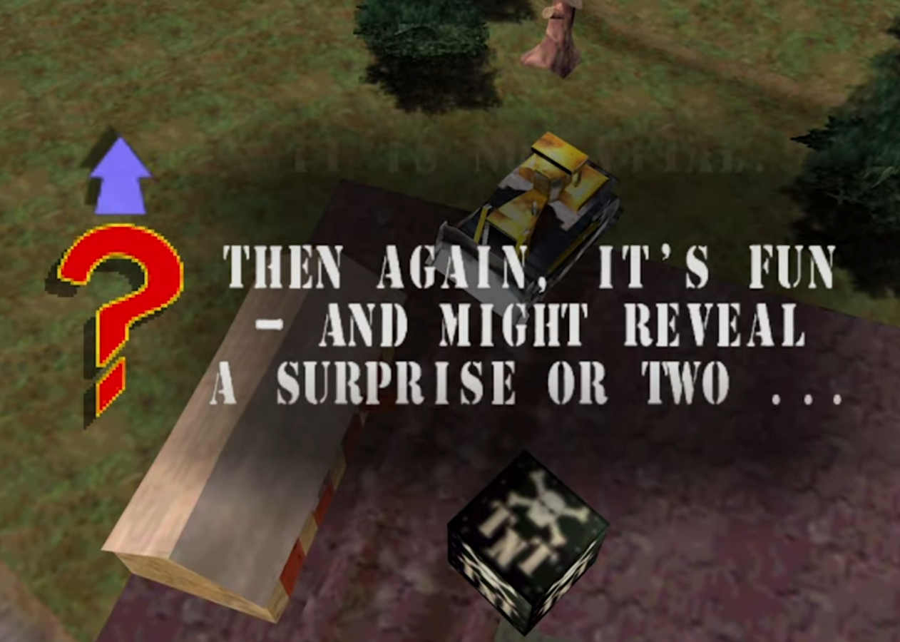
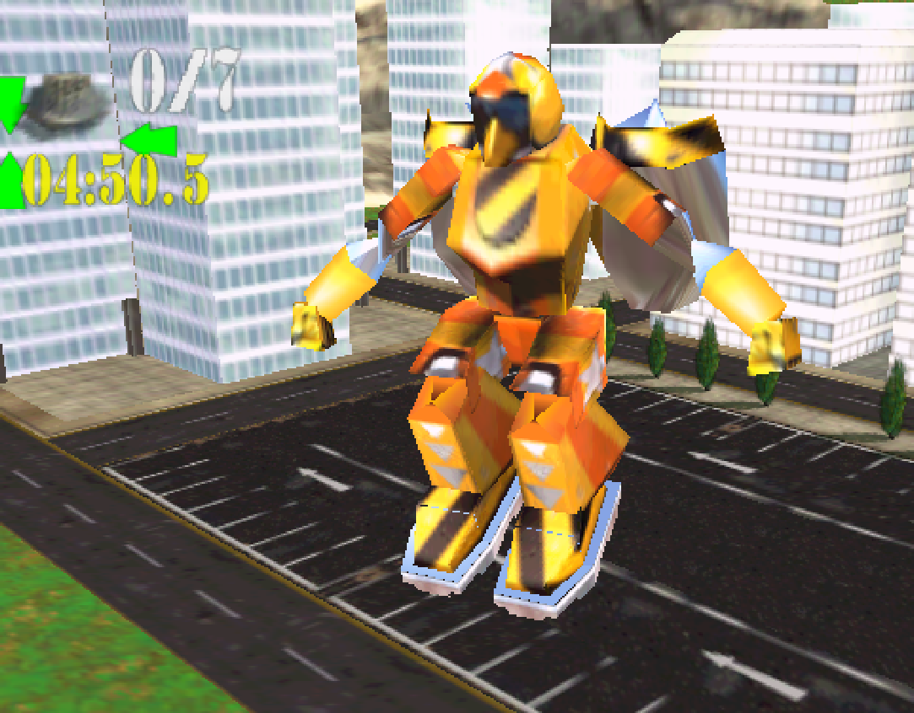
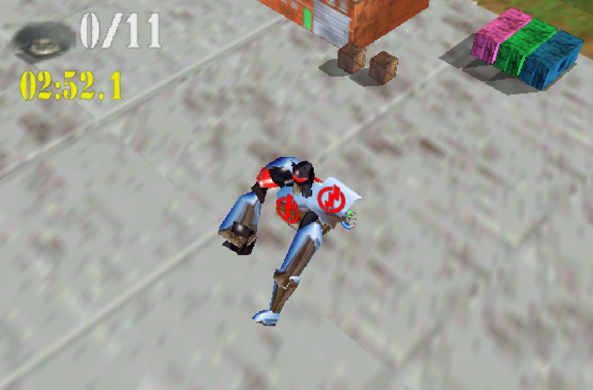

February's theme for the Retro Game Club was “Gotta Go Fast”, and we decided on playing the Nintendo 64 game Blast Corps, by Rare.
One thing I do want to note in advance is that of all the games proposed in the poll, the only one I was not interested in was Blast Corps. And yet, somehow, it's the one that won. And, spoiler alert for the rest of this blog post, I kinda regret it.
Rare as a gaming company is known for putting out very successful and well reviewed games on the Nintendo 64, from Goldeneye to Banjo Kazooie to Conker Bad Fur Day. I don't think it's an overstatement to say that Rare was the most successful non-Nintendo developer for the Nintendo 64 console.
But, not all Rare games are created equal. Some games, like Donkey Kong 64, didn't age very well. And some games… well, they're Blast Corps.
Blast Corps is a game where you pilot an array of different “vehicles” to destroy buildings that are in the path of a slow-paced but unstoppable truck carrying missiles. Any contact with the truck, and it's a nuclear armageddon. So don't stand too close to it.
Thankfully, the game doesn't take itself very seriously. For example, this is what the game tells you when you first destroy a building that most definitely is not in the path.

And when you destroy buildings, you can sometimes see people escape from them. And the game calls them survivors because, I guess, they survived you destroying their homes? Don't think too much about it. Just blow stuff up.
Like I said multiple times this month, this is the most 8-year old boy game I've ever played. It truly feels like Rare made that game thinking, what's the ideal game for a little 8 year old boy?
No story. Just trucks and explosions. Oh, and mecha robots. That's one of the available vehicles.
In fact, that's MORE than one of the available vehicles. Blast Corps really thought mechas would help sell the game.


Well… no? Sure it can appeal to an 8 year old boy pretty easily, but it's all just surface level, short dose, explosion-driven fun. The easy levels are… okay I guess. But even just getting to the medium levels, I found them to be cryptic and poorly telegraphed. If the easy levels were like an overly sugary frosting on a cake, the medium levels were like realizing beneath the frosting, the cake's just cardboard.
It's hard to describe how bad this game was. I don't think anyone in the group enjoyed their time playing it. The only person who seemed to be liking it was the one who originally proposed the game, and even then, I think they were just finding it funny that they managed to make the whole club play a bad game.
I know we haven't played many games in the club so far, but I'm confident this is the game I enjoyed playing the least, and I'm fairly sure it'll stay that way for a while.
A lot of things happened in late January and February in my life, and I ended up getting access to a home server. I've set it up with Retroarch and Sunshine/Moonlight (though it doesn't work perfectly due to me being on Ubuntu instead of Windows), giving me a way to play my retro games from any device on my network.
What this means is that any time I was playing Blast Corps in February, I would just quickly switch to another game instead, and enjoyed it a lot more. I played more Crazy Taxi, the game I had proposed in the poll, than I did Blast Corps, the game that was chosen.
Next month, we'll be playing another game I physically own: Super Castlevania IV for the SNES.
I was thinking of playing it on my retro setup, and while I'll probably try it there, it's more likely that I'll be playing it with the convenience of save states and rewind mechanics. If there's one key takeaway from my Spyro experience last month, it's that retro gaming on modern devices is a lot more convenient than retro gaming on a retro set up.